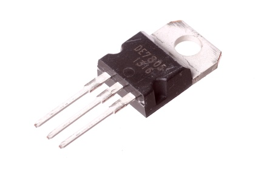
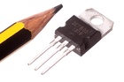
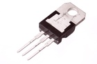

TO-220 5v Voltage Regulator 1 A - VT251

Summary
Name: TO-220 5v Voltage Regulator 1 A
ID: VREG-T220-X-V05-A1
Hex ID: VT251
WebPage: https://github.com/oomlout/oomlout-OOMP/wiki/VREG-T220-X-V05-A1
Short URL: http://oom.lt/VT251
Revision History: https://github.com/oomlout/oomlout-OOMP/blob/master/parts/VREG-T220-X-V05-A1/
| Type |
Size |
Color |
Description |
Index |
VREG
Voltage Regulator |
T220
TO-220 |
X
|
V05
5v |
A1
1 A |
Images


About
This part is awaiting a description.
Specifications
| Info |
Value |
| Type |
Voltage Regulator |
| Size |
TO-220 |
| Description |
5v |
| Index |
1 A |
Extra Details
Spotted a mistake, want to add more? Let us know oomp@oomlout.com
All images and resources are licensed [CC BY-SA] unless otherwise stated (ie. the datasheets)